Representative Kerbstone & Side Stone Moulds
Expanded catalogue with 22 qualified product examples. More sizes and styles can be quoted from drawings or sample photos.
Arc Side Stone Mould
圆弧侧石 · 20 × 30 × 15 cm · angled integrated profile
L-Type Side Stone Mould
L型侧石 · 25 × 20 × 15–5 cm

Isolation Barrier Mould
隔离墩模具 · 50 × 35 × 50 cm · round hole Ø5 cm
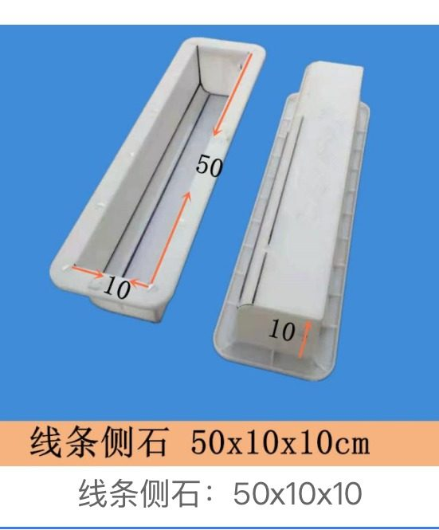
Line Side Stone Mould
线条侧石 · 50 × 10 × 10 cm

S-Type Side Stone Mould
S型侧石 · 40 × 40 × 20 cm
Slope Water-Blocking Kerbstone Mould
坡型挡水路沿石 · 50 × 13 × 10 cm · 1-out-2 mould
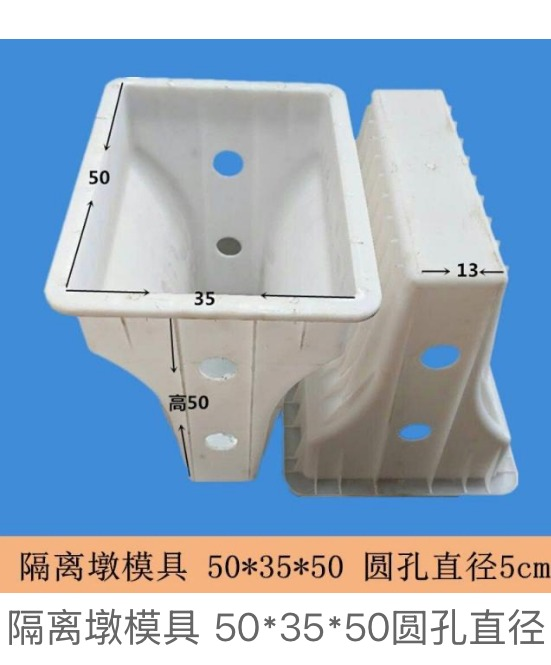
Kerbstone Mould Design 01
Kerbstone Mould · design 01
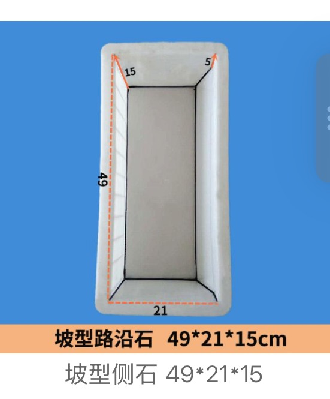
Kerbstone Mould Design 02
Kerbstone Mould · design 02
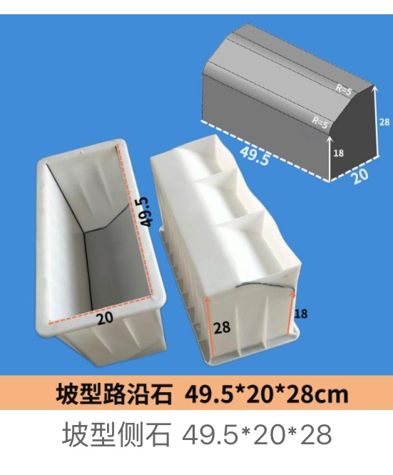
Kerbstone Mould Design 03
Kerbstone Mould · design 03
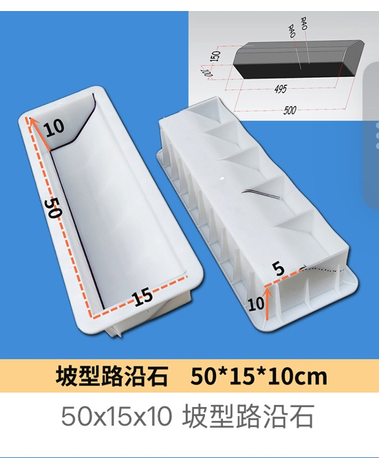
Kerbstone Mould Design 04
Kerbstone Mould · design 04
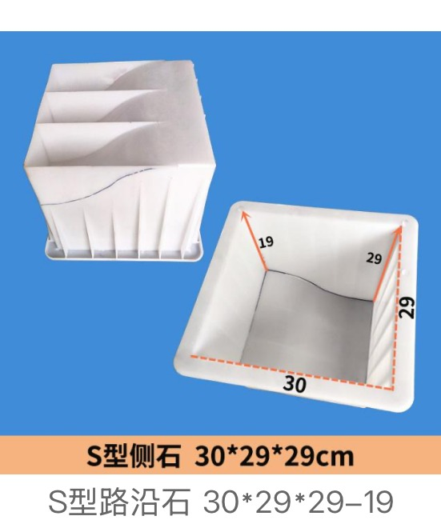
Kerbstone Mould Design 05
Kerbstone Mould · design 05

Kerbstone Mould Design 06
Kerbstone Mould · design 06

Kerbstone Mould Design 07
Kerbstone Mould · design 07

Kerbstone Mould Design 08
Kerbstone Mould · design 08
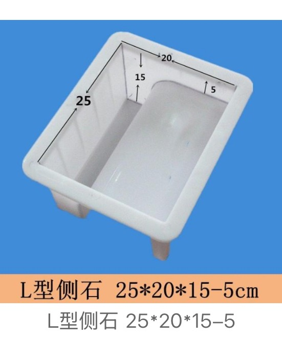
Kerbstone Mould Design 09
Kerbstone Mould · design 09

Kerbstone Mould Design 10
Kerbstone Mould · design 10
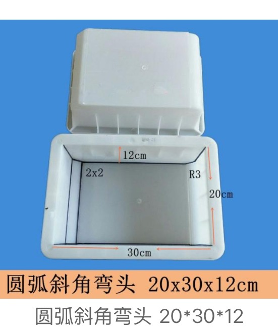
Kerbstone Mould Design 11
Kerbstone Mould · design 11
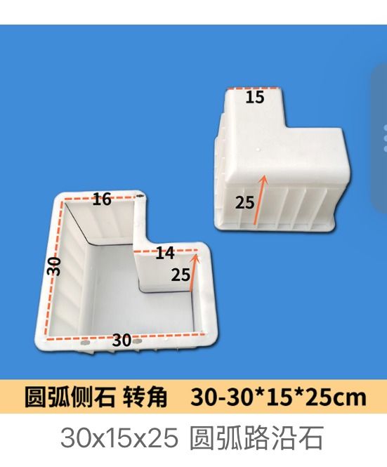
Kerbstone Mould Design 12
Kerbstone Mould · design 12
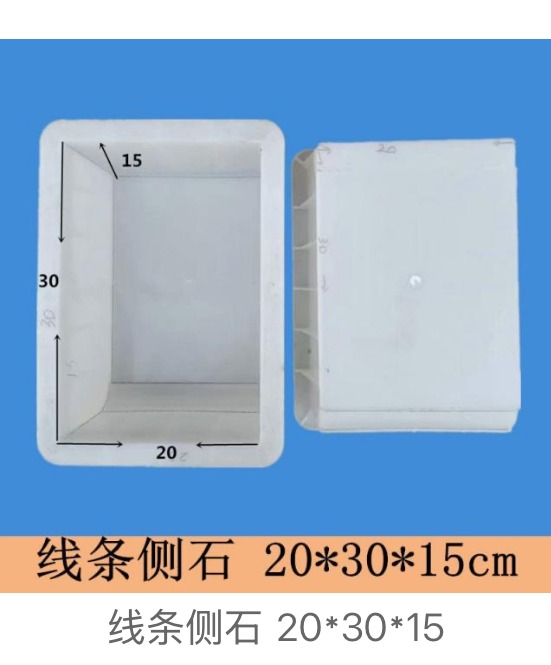
Kerbstone Mould Design 13
Kerbstone Mould · design 13

Kerbstone Mould Design 14
Kerbstone Mould · design 14
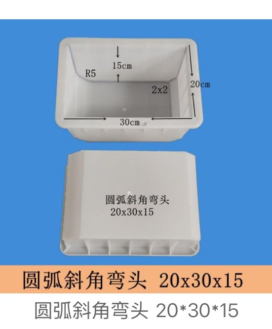
Kerbstone Mould Design 15
Kerbstone Mould · design 15

Kerbstone Mould Design 16
Kerbstone Mould · design 16